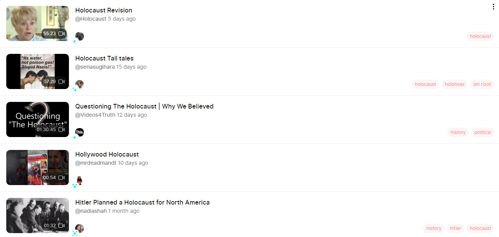

My experience with Odysee
March 4th, 2021
Long story short, it appears to be extremely well made software, and we need to get in on it. It's basically what BitChute should have been.
I heard about Odysee from a fellow BANGer on TRS. About a week ago he made a post explaining how Odysee was this new video sharing site which was built from the ground up to not be censorable, and we could get in on the ground floor. At the time I checked it out, and was moderately intrigued. The site seemed somewhere inbetween YouTube and Bitchute in terms of functionality and competence, at least to first glance. I didn't look much further because I didn't have much reason to. I still to this day watch some chess videos on YouTube, and for other non-political content, there's just not much reason to use Odyssee, as it is a tiny bit janky.
As an aside, they have a really nice feature for those not banned from YouTube, where they can automatically post on Odysee. This is good for them and the site, but actually pretty annoying, since it feels like we're back to 2012 politics on the internet, not because everything is banned on Odysee, but because everything is banned on YouTube. Censorship seems to be non-extant on Odysee, as I'll explain below.
Today, when writing up my article on an anti-White CBC piece, I felt the need to upload a video to Odysee, in the hopes that it would properly embed here on BCGoyNews. I considered this a longshot, seeing how terrible BitChute was technically. I used to upload videos and then just hope and pray that it would get processed within a few hours. Sometimes it would take multiple days to process a video, it was so bad.
Instead, Odysee processed my video in just a few minutes. Not only that, but technically it seems even superior to YouTube in some ways. It has a much better thumbnail process, where you can scroll through the entire video looking for a thumbnail, or upload your own. On YouTube this was far more difficult. It also has a very sensible tag feature, where you can type in up to 5 tags for your video, an excellent number, and if it is a pre-existing tag it can autocomplete. The suggested tags are also fairly reasonable.
But finally, I was certain that it would utterly fail at embedding, even though this is technically easy in HTML. Nope, my video embedded perfectly. In fact, here it is again in all its glory.
It's not perfect, but Odysee has worked extremely well for my purposes. Having said that, I almost wanted my channel to remain small so as to avoid banning. So what about general censorship on the website? And secondly, one of the biggest problems with BitChute was the utterly useless search function, which took forever and then just fucking failed totally. Is that fixed? Let me answer both questions with the following screenshot.

And it took less than a second after hitting enter to generate results. I feel safe to say that I wholeheartedly endorse people making Odysee channels and then trying to build something on there, with one caveat. The business model of Odysee seems to be that you pay to have your channel promoted. You might also have to pay to upload videos, it's a little complicated. I didn't have to pay for my upload, but the fact that it's a little complicated is why I can't guarantee to you that this will be 100% worth our time. I can guarantee that it's worth a shot.